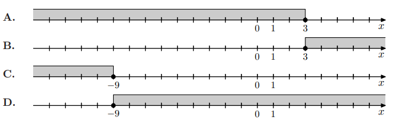

Dana jest nierówność:
\( 8 - \frac{1 - 2x}{2} \geq 3x \)
Największą liczbą całkowitą, która spełnia tę nierówność, jest
\( 8 - \tfrac{1-2x}{2} \ge 3x \)
\( 8 - \tfrac{1}{2} + x \ge 3x \)
\( 7.5 \ge 2x \implies x \le 3.75 \)
Największa liczba całkowita to 3.
Odp.: C.
Zad. 2
(maj 2025 - zad. 6)
Dana jest nierówność:
\( 3 - 2(1 - 2x) \ge 2x - 17 \)
Na którym rysunku poprawnie zaznaczono na osi liczbowej zbiór wszystkich liczb rzeczywistych spełniających tę nierówność?

\( 3 - 2 + 4x \ge 2x - 17 \)
\( 1 + 4x \ge 2x - 17 \)
\( 2x \ge -18 \implies x \ge -9 \)
Poprawny rysunek: D.
Zad. 3
(sierpień 2024 - zad. 5)
Zbiorem wszystkich rozwiązań nierówności
\( \frac{3(6-x)}{17} \leq 3 \)
jest przedział
\(\frac{18 - 3x}{17} \le 3\)
\(18 - 3x \le 51\)
\(-3x \le 33 \implies x \ge -11\)
Zbiór rozwiązań: \([-11, ∞)\).
Odp.: D.
Zad. 4
(czerwiec 2024 - zad. 6)
Liczba wszystkich całkowitych dodatnich rozwiązań nierówności
\( \frac{3x - 5}{12} < \frac{1}{3} \)
jest równa
Wskaż rysunek, na którym przedstawiony jest zbiór wszystkich liczb rzeczywistych \(x\), spełniających jednocześnie nierówności:
\(0 < 7 - 3x\) oraz \(7 - 3x \le 5x - 3\).